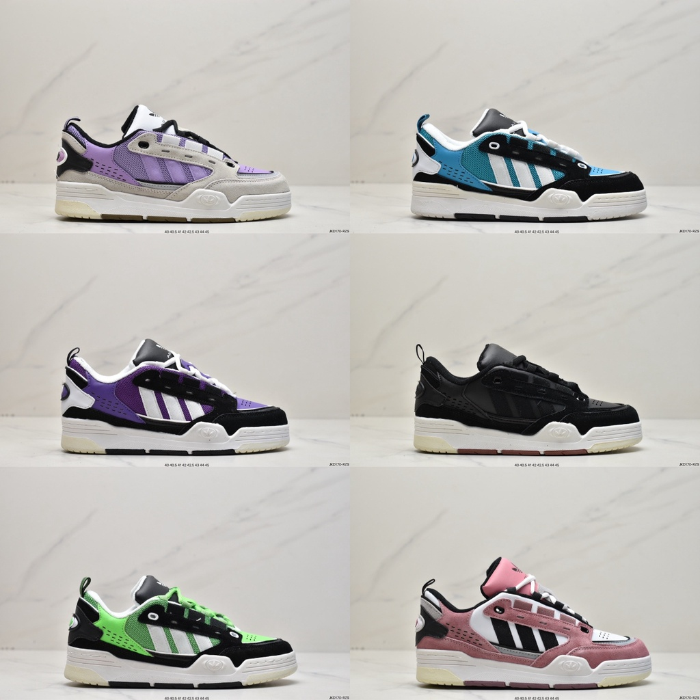

Se você compartilha dessas paixões, vou compartilhar alguns dos meus lugares favoritos para adquirir tênis e camisetas incríveis. Quando se trata de sneakers, lojas especializadas ou até mesmo aquela busca online por edições limitadas costumam render verdadeiros tesouros. E para as camisetas geeks, lojas online com uma variedade impressionante de designs exclusivos são o meu refúgio.
O Air Jordan 6 é um icônico modelo de tênis de basquete criado pela Nike em colaboração com Michael Jordan. Lançado pela primeira vez em 1991, o design foi influenciado pelo carro esportivo Porsche 911. O tênis apresenta detalhes distintos, como o sistema de fechamento com laço, a língua com abertura para fácil calce e uma unidade de amortecimento visível. O Air Jordan 6 é reconhecido por sua combinação de estilo, desempenho e história, tornando-se um clássico duradouro na cultura sneaker.
O Air Jordan 4 é um famoso modelo de tênis de basquete da linha Air Jordan, lançado pela Nike em 1989. Projetado por Tinker Hatfield, apresenta uma estética única com detalhes como a aba no calcanhar com o logo "Flight" e uma unidade de amortecimento visível. O design inovador e a durabilidade tornaram o Air Jordan 4 um ícone na cultura sneaker, sendo usado por Michael Jordan em momentos importantes da sua carreira.
- 
Com um estilo poderoso e ousado que remete à era icônica dos anos 2000, os tênis Adidas Adi2000 personificam a fusão perfeita entre moda retrô e moderna. Com linhas arrojadas e detalhes marcantes, este modelo captura a essência da cultura sneaker da época. Sua construção inovadora e a presença marcante do logotipo Adidas refletem a influência audaciosa dessa era, proporcionando um visual distintamente nostálgico e contemporâneo para os amantes de calçados.
Os Vans Sk8-Hi são tênis de cano alto da marca Vans, conhecidos por seu design clássico e estético "skate". Lançados inicialmente em 1978, esses tênis se destacam por sua durabilidade, aderência eficiente e proteção no tornozelo. O modelo Sk8-Hi tornou-se um ícone da cultura skate e streetwear, apreciado não apenas por skatistas, mas também por entusiastas de moda urbana. Sua versatilidade e apelo atemporal fazem dos Vans Sk8-Hi uma escolha popular para quem busca um visual casual e autêntico.